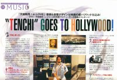

Contests for the tmffa.com |
Each contest will end eventually and I will announce the winners ASAP. |
Contest Status
The status for the contests. If someone wins the contest I will change the status of the contest. Newest contest on top.
| Name of Contest | Prize Availability | Prize |
| 900,000th Hit on the Main Page | Unavailable, Coutner broken |
TMFFA T-shirt |
| 800,000th Hit on the Main Page | Unavailable, Brian,Dinsdale Jr |
TMFFA T-shirt |
| 700,000th Hit on the Main Page | Unavailable, Doug Nelson won |
Tenchi Muyo Playing Cards! |
| 600,000th Hit on the Main Page | Unavailable, Justen Christman won |
Tenchi Muyo Playing Cards! |
| TMFFA T-Shirt Design Contest | Unavailable, Jeff Rayder won |
1 TMFFA T-Shirt! |
| 500,000th Hit on the Main Page | Unavailable, Cav won |
A Ryo-ohki Doll! |
| 400,000th Hit on the Main Page | Unavailable, Dale G. Abrsold won |
Volume 7.4, 7.5, 7.6 of the Tenchi Manga |
| 300,000th Hit on the Main Page | Unavailable, Michael Osuna Jr. won |
Volume 7.1, 7.2, 7.3 of the Tenchi Manga |
| Find the Reversed Image | Unavailable, Josh Lindner won |
1 Tenchi Muyo in Love Official Program (Red Cover) |
| Find the Title of 20 Stories | Unavailable, Lathrop Preston won |
1 Tenchi Muyo in Love Official Program (Green Cover) |
| 200,000th Hit on the Main Page | Unavailable, Navaash won |
1 Tenchi Muyo Movie 2 Pencil Board |
| Free Ani-mayhem Cards | Unavailable |
A pack of ten random Ani-mayhem cards |
| Tenchi TV Quiz | Unavailable, K'thardin won |
2 packages Tenchi Muyo Playing Card Deck |
| 100,000th Hits on the Main Page | Unavailable, Bglanders won |
1 Tenchi Muyo Pencil Board |
Information
In the archive, there is ONE image where I have purposely flipped it so that it is a perfect mirror of the original image. Find this image and you will receive your prize. But be warned, you must know the answer. You have only one guess and must be the first one to claim it. This is to be fair. The prize is a rare Tenchi Muyo in Love Official Program.
The reversed image was one of the guardians on the main page. Azaka was flipped. The shadow and the reverse character should have been an indication.
Official Rules for the Contest
You must E-mail me at gensao@tmffa.com your answer ASAP. If you are correct, I will reply to your E-mail and negotiate on how to obtain your prize. If you did not correctly find the image I will not reply to your message.
No Purchase necessary. ;) Your privacy will be respected, but if you wish to receive your prize, you must to send me your physical address. If you do not want to do this, an electronic prize will be given in lieu of the pencil board. GenSao reserves the right to refuse the distribution of the prize if foul play is detected/suspected.
Find the Title of 20 Stories
Information
I will quote twenty different stories, each by a different author. If you are the first one to correctly correspond the twenty passages to the correct 20 titles, you with the other rare Tenchi Muyo in Love Official Program I have. It has a green cover. All the stories can be found in the archive.
The Twenty Passages
Go here and download the twenty passages.
The Twenty Passages:
Answers
Go here and see the answers.
Official Rules for the Contest
You must E-mail me at gensao@tmffa.com your answer ASAP . If you are correct, I will reply to your E-mail and negotiate on how to obtain your prize. If you did not correctly correspond the 20 passages to the author, I will tell you to try again. I will not tell you what you got wrong, but that your entry is wrong. You are free to resubmit your answers if this occurs.
No Purchase necessary. ;) Your privacy will be respected, but if you wish to receive your prize, you must to send me your physical address. If you do not want to do this, an electronic prize will be given in lieu of the pencil board. GenSao reserves the right to refuse the distribution of the prize if foul play is detected/suspected.
200,000th, 300,000th, 400,000th, and so on... Hit on the Main Page
Information
The 200,000th person to visit the archive will receive a Tenchi Muyo Movie 2 pencil board.
The 300,000th visitor will get the first three parts of the seventh volume of the Tenchi Manga. Volumes 7.1, 7.2, 7.3, four small independent stories.
The 400,000th person will get the last three parts of the seventh volume of the Tenchi Manga. Volumes 7.4, 7.5, 7.6, the Manga's Tenchi Muyo in Love remake.
The 500,000th guest will receive a Ryo-ohki doll!
The 600,000th and 700,000th visitors get a deck of Tenchi Muyo playing cards.
The 800,000th and 900,000th visitors gets a TMFFA T-shirt. You can either imediately get an XL T-shirt or wait for a T-shirt size of your choice.
The 1,000,000th visitor will recieve someting really special. Yet to be determined.
This contest is similar to the one for the "100,000 Hits at the Archive" The contest will take a while to finish, but eventually a lucky person will hit #200,000, #300,000, etc. Also if say #300,000 is not claimed, #300,001, #300,002, and so forth have a chance to claim the prize A side of the pencil board given away at #200,000 is shown at the image to the side.
Official Rules for the Contest
To qualify for the prize, you MUST take a screen capture of the page with the counter at 800,000 and/or save the counter image, and send me an E-mail at gensao@tmffa.com ASAP.
No Purchase necessary. ;) Your privacy will be respected, but if you wish to receive your prize, you must to send me your physical address. If you do not want to do this, an electronic prize will be given in lieu of the pencil board. GenSao reserves the right to refuse the distribution of the prize if foul play is detected/suspected. If caught cheating, you are ineligible to win any future contests or prizes.
Information
I have a surplus of Ani-mayhem cards and need to clean up some room in my home. So I decided to give away all of my extra Ani-mayhem cards. There is a limited quantity to what I can give away. But once they are all gone, they are all gone. I'll inform you at the top of the page of the availability of the cards.
How to Get the Cards
You must send a Self Addressed Stamped Envelope (SASE) with about 33 cents of Postage, a first class stamp, to cover postage to, to the following address.
Aldrich "GenSao" Bautista
c/o Ani-mayhem Offer
707 Sycamore Lane #103
Davis, California 95616
Multiple packs per household is allowed, but you must send one SASE per request. I do have a limited supply of cards so they will eventually run out. It is on a first come first serve basis. I will immediately update the page and tell you when the supply has ran out. If you sent a SASE Address and don't receive your cards, it generally means I have ran out of cards and can't send you them. If t his happens I may send a consolation prize.
{kind=link}